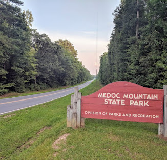

A short drive from Littleton, in Halifax County, Medoc Mountain State Park sits on what's left of a mountain range that formed roughly 350 million years ago. At 325 feet, the summit won't rival anything out west, but it's a genuinely unusual piece of geology for this flat stretch of the coastal plain, and the park around it has grown into one of the area's best-kept outdoor spots.
The park takes its name from Sidney Weller, a 19th-century farmer who planted vineyards here and named the mountain after the Medoc wine region of Bordeaux, France. These days people come less for the view from the top and more for the trails, the creek, and the quiet. It's the kind of place where a couple of hours can easily turn into an afternoon.
The park has about 10 miles of trails plus water access, so there's a bit of everything:
Day-use access to the park is free; fees only apply to camping and certain event reservations. Pets are welcome on the trails as long as they're leashed. One thing worth knowing before you go: the park's official street address can send GPS apps to a road that's closed off, so it's best to search for the park by name rather than by address.
For current hours, trail maps, and camping details, visit the official park page: Medoc Mountain State Park - NC State Parks